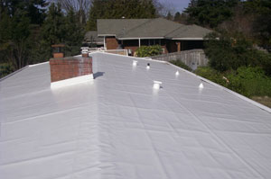

Branford Roofing - Membrane Roofs

Membrane products enable you to basically "shrink-wrap" your roof. Prior to the advent of these products, you knew that if you bought a building with a flat roof, dealing with leaks would be inevitable. These new membranes allow you to be unconcerned with any rain cloud!
Three Basic Types
There are three major types of flexible roofing membranes.
Thermoset Membranes
These materials are ones that chemically crosslink. What that means to you is that once seams cure you have one giant molecule of roofing over your head and possessions. That is a huge advantage. Many of the synthetic rubber roofs (EPDM) fall into this category. You also find the CSPE, CR, and ECR compounds/membranes in this group. These membranes are fairly thick and often you will find them in thicknesses between 30 and 60 mils. These roofing materials offer superior performance over a wide range of exposures. If applied according to manufacturers recommendations, they will give you leak free performance for many, many years.
Thermoplastic Membranes
These membranes are very similar to the Thermosets but there is no chemical cross-linking or vulcanization. Seams in the materials are welded together with solvents or heat. The welds - when done properly - are as strong as the material. PVC plastic materials are part of this group as well as the following materials: CPA, CPE, EIP, NBP, PIB, and TPO. These are "code" acronyms you might hear the roofer talk about. Be sure to ask exactly what type of material you are getting so you can see which group it falls into!
Modified Bitumen Membranes
These membranes combine asphalt with modifiers and reinforcement materials. They are often a "sandwiched" roofing material. These materials can perform well in my opinion but they are not as advanced as the other two groups. These materials are often referred to as "torch-down" roofs because a large flame throwing torch melts the asphalt so that seams can be joined together. You might hear your roofer mention the names APP or SBS when referring to this membrane.
Total Exteriors, LLC Provides These Detailed Services:
- Asphalt Shingles
- Clay Tile Roofs
- Concrete Tile Roofs
- Metal Roofing
- Slate Roofs
- Wood Shake Roofs
- Flat Roofs
- Gable Roofs
- Hip Roofs
- Membrane Roofs
- Roofing Contractor
- Roofing Contractors
We Provide Roofing in the Following Towns in Connecticut:
Branford Roofing | East Haven Roofing | North Branford Roofing | Guilford Roofing | Madison Roofing | Westbrook Roofing | New London Roofing | Old Saybrook Roofing | Old Lyme Roofing | East Lyme Roofing | Waterford Roofing